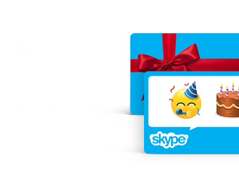

Мы - фанаты старых версий Skype. Мы создали этот проект для таких же любителей старых версий. Тут собрана разная информация и методы возвращения старого дизайна или старых версий.

В 2018 году вышел Skype 8... Уродливый интерфейс, отсутствие функций ранее доступных в 7 версии даже спустя 5 лет, редизайн звуков и полное отключение старого клиента от серверов по сути "похоронили клиент"... Однако, остается немало людей которые ценят тот самый, классический Skype. Специально для таких и был создан этот проект